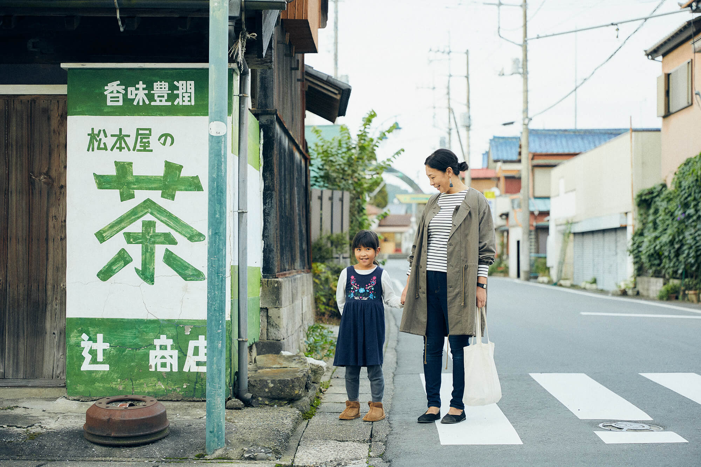
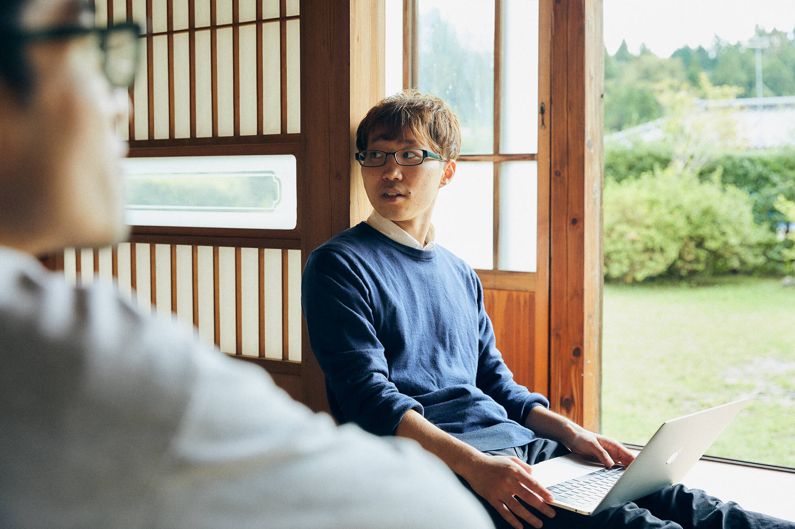
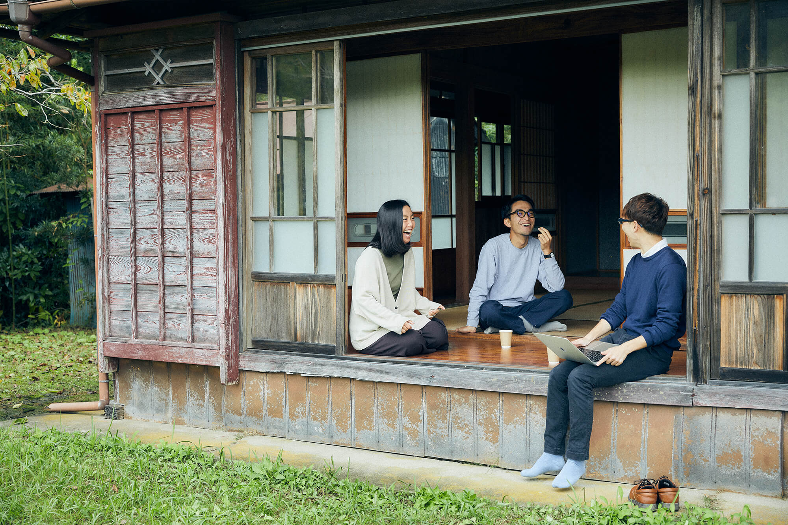
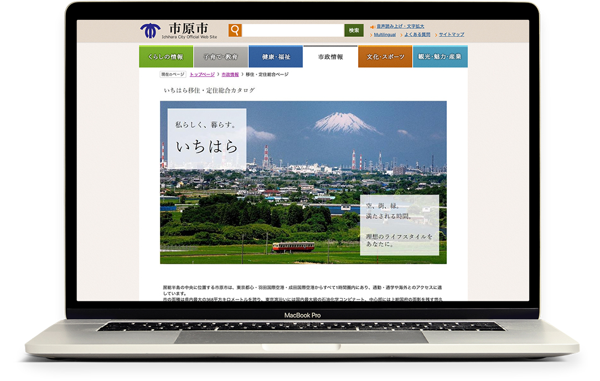

市原市では、誰一人取り残すことなく、公正に個別最適化された学習環境や学びの保障を実現するため、タブレット端末を市立小中学校に通う全児童生徒に1人1台整備し、併せて、電子黒板の全普通教室への整備を完了しました。
市原市GIGAスクールの目的は、これらの機器を活用して「学力を基礎として必要な情報を収集・分析し、それらを活用し主体的に課題解決する子どもの育成」を図ることです。
他市に先駆けて整えることができたICT環境を最大限活用し、これまで、学校において培ってきた数多くの教育実践を組み合わせることにより、新たな学習スタイル・授業スタイルを構築します。
加茂学園は、地区内の小学校を統合し、中学校との併設型小中一貫教育校として平成25年に開設しました。
市内唯一の併設型小中一貫教育校であるという特性を最大限に活かし、質の高い教育、魅力ある学校の実現を図っており、外国人講師（ＡＬＴ）の常時配置等により、今後の社会で求められる英語力を育成し、国際的に活躍できる人材の育成を目指します。
市内の小学生が外国の言語や文化について体験的に理解を深めるため、インターネットを介したテレビ電話により2020年東京オリンピック・パラリンピックにおけるホストタウン相手国であるニュージーランドの学校とリアルタイムに交流する事業を実施しております。

市原市とセブン＆アイグループ6社は、地域の一層の活性化と市民サービスの向上に資することを目的に包括連携協定を締結しています。
このうち株式会社セブン－イレブン・ジャパンでは、地元などに移住しオーナーとして独立開業される方に対して、引っ越し費用などを支援する「U・Iターン独立支援制度」を実施しています。
国（ハローワーク）の機関であるハローワークプラザ市原があり、お仕事探しの相談・紹介・求人情報の検索、求人申込書の取次ぎなどのサービスを行っています。
お子様と一緒でも安心して仕事探しができるマザーズコーナーがあります。子育てをしながら就職を目指している方にも優しい施設です。

各関係団体や無作為抽出で集まった市民による123人の委員で構成された会議です。
防災に関する実情等を知り、災害が発生すると身近にどのような危険があるのか、被害を軽減するために自分自身や地域で何ができるのかなどについて、活発な話し合いを行います。市原市は、こうした市民参加による会議での意見を、地域主体の防災計画である「地区防災計画」の策定につなげていきます。
平成29年から、五井エリアの上総更級公園内に防犯ボックスを開設しています。
防犯ボックスは、地域住民、市、警察が一体となった防犯活動を推進し、地域の防犯力の向上を図るための拠点施設です。警察官OBであるセーフティアドバイザーが、市原市防犯ボックスを拠点に、地域住民による自主防犯活動団体と連携し、合同パトロールなどを実施しています。
